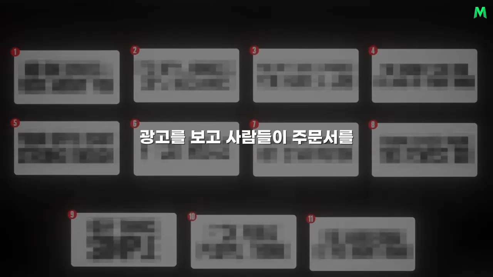
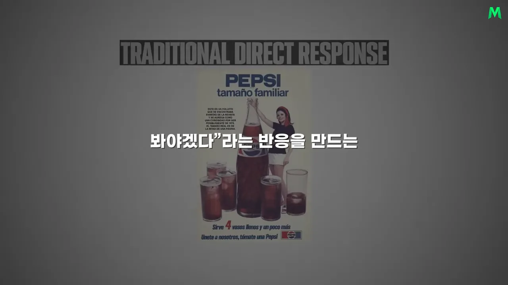
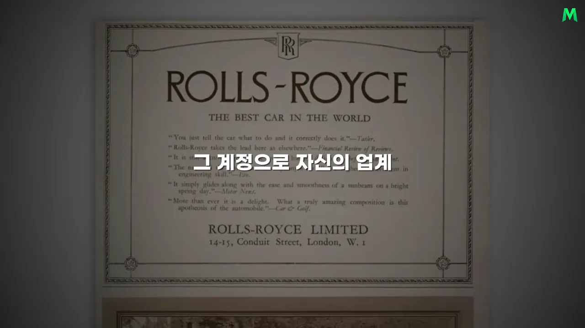
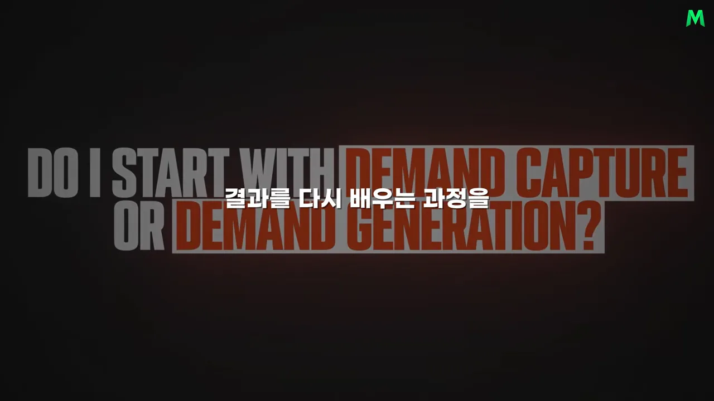
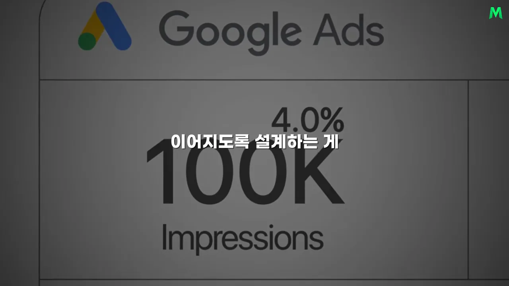
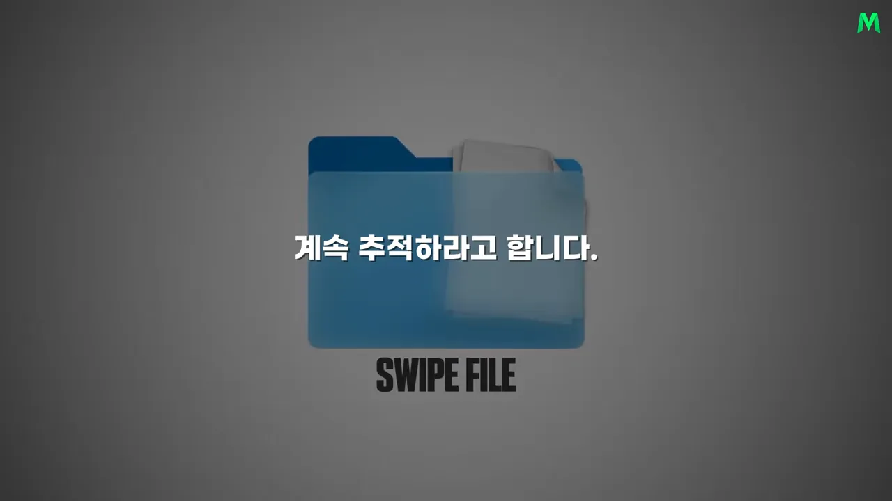

출발점은 관심과 전환, 그리고 옛 광고
사브리 수비는 호주의 마케팅 에이전시 대표예요. 50달러를 들고 빌린 방에서 시작해, 고객사 매출을 합쳐 78억 달러 넘게 만들었다고 말해요. 이 영상은 이 금액을 '약 10조 원'으로 옮겼어요. 그가 모든 걸 잃고 0에서 다시 시작한다면 밟겠다는 순서가 11단계예요.
영상은 11단계를 번호 붙인 카드로 한 번에 보여 줘요. 카드 글씨는 흐리게 가려 두고, 단계마다 한 장씩 열어 보이는 방식이에요.

내레이션은 일곱 번째와 열한 번째 단계에만 번호를 붙여요. 나머지는 원래 영상의 순서에 맞춰 번호를 매겼어요. 같은 색끼리 이 문서의 한 섹션에서 다뤄요.
1단계: 바뀌지 않는 두 가지 능력
사브리가 가장 먼저 익히라는 건 플랫폼이 아니에요. 사람의 관심을 끄는 능력과 그 관심을 구매로 바꾸는 능력이에요. 예전엔 신문과 잡지였고, 다음엔 구글과 페이스북, 지금은 틱톡과 AI(Artificial Intelligence) 도구예요. 무대는 계속 바뀌어도 사람을 멈춰 세우고 움직이게 하는 원리는 크게 달라지지 않았다고 봐요.
2단계: 옛 인쇄 광고에서 관심 끄는 법을 배워요
그래서 최신 광고보다 과거로 돌아가라고 해요. 1960~80년대의 다이렉트 리스폰스 광고가 교재예요. 당시엔 광고를 본 사람이 주문서를 보내야만 돈이 됐어요. 결과가 바로 드러나니 헤드라인 한 줄, 이미지 하나에도 고민이 많이 들어갔어요.
영상은 이런 광고의 예로 펩시 광고를 띄워요. 맨 위 'TRADITIONAL DIRECT RESPONSE'라는 제목 아래, 병과 컵이 가득한 지면 광고가 놓여 있어요.

분석할 곳은 세 군데예요. 헤드라인이 어떻게 시선을 끄는지, 서브 헤드라인이 그 관심을 어떻게 이어 가는지, 이미지가 어떻게 광고가 아니라 기사처럼 자연스럽게 보이는지예요. 롤스로이스 광고를 보면 맨 위 큰 글씨 'ROLLS-ROYCE'가 헤드라인, 바로 아래 'THE BEST CAR IN THE WORLD'가 서브 헤드라인이에요. 그 아래로 기사처럼 짧은 인용문이 이어지고, 자동차 사진은 더 아래에 있어요.

좋은 광고를 볼 때마다 따로 모아 두면 그게 자기만의 스와이프 파일이 돼요. 광고를 만들 때마다 백지에서 시작하지 않고, 수십 년 동안 사람들을 움직여 온 패턴을 꺼내 쓰는 거예요. 첫 단계에서 배우는 건 광고 도구가 아니라 사람이 무엇에 멈추고, 무엇을 읽고, 무엇 때문에 움직이는지예요.
수요를 잡을까, 만들까
3단계: 내 트래픽은 어떤 사람들인가요?
좋은 광고를 만들어도 상대가 누구인지 모르면 돈을 버리기 쉬워요. 사브리는 트래픽을 두 종류로 나눠요. 영상은 이 질문을 원래 영상의 제목 카드로 보여 줘요. '수요 포착으로 시작할까, 수요 창출로 시작할까?'라는 뜻이에요.

수요 포착은 이미 원하는 게 뭔지 알고 해결책을 찾는 사람을 잡는 방식이에요. 구글에 '강남 치과', '회계 프로그램 추천', '다이어트 식단'을 검색한 사람이 그래요. 문제도 알고 해결책도 찾는 중이라 팔기 쉬워요. 사브리는 이런 고객을 '낮게 달린 과일'에 비유해요. 대신 이런 시장엔 경쟁자도 몰려 있어요.
수요 창출은 메타처럼 사람들이 물건을 찾으러 오지 않는 곳에서 일어나요. 친구 사진이나 영상을 보던 사람을 광고로 멈춰 세우고, 몰랐던 문제를 깨닫게 하고, 결국 제품을 원하게 만들어야 해요. 훨씬 어렵지만, 사려던 사람끼리 나눠 갖는 게 아니라 새 고객을 만들어 내니 시장이 훨씬 커요.
| 수요 포착 | 수요 창출 | |
|---|---|---|
| 대표 무대 | 구글 검색 | 메타 피드 |
| 고객 상태 | 문제를 알고 해결책을 찾는 중 | 문제도, 사려는 마음도 아직 없음 |
| 팔기 | 비교적 쉬워요 | 훨씬 어려워요 |
| 시장과 경쟁 | 작고 경쟁자가 몰려 있어요 | 훨씬 커질 수 있어요 |
사브리는 진짜 큰돈을 벌고 싶다면 있는 수요를 잡는 데서 멈추지 말고 수요를 만드는 능력을 배우라고 해요.
영상은 뒤쪽(09:17 무렵)에서 구글 광고 숫자 화면을 배경으로 잠깐 지나가요. 노출 '100K' 위에 '4.0%'가 붙어 있어요. 내레이션은 이 숫자를 설명하지 않지만, 원래 영상에서 수요 포착의 한계를 보여 주려고 든 예시예요.

4단계: 광고를 콘텐츠처럼 보이게 해요
상품을 살 생각이 없던 사람의 손가락은 어떻게 멈출까요? 사브리는 광고만 연구하지 말고, 사람들이 평소 스스로 공유하는 콘텐츠를 보라고 해요. 메타에서 많이 공유되는 건 뉴스, 새로운 발견, 흥미로운 사실, 가십이에요. 모두 '이건 봐야겠다'는 반응을 부르는 내용이에요. 광고도 처음부터 '지금 구매하세요'라고 외치기보다 이런 콘텐츠처럼 자연스럽게 관심을 끌어야 해요.
광고의 뼈대로는 AIDA(Attention, Interest, Desire, Action)를 써요. 네 단계를 순서대로 밟아요.
예로 드는 건 데이비드 오길비의 해서웨이 셔츠 광고예요. 셔츠를 입은 모델이 한쪽 눈에 안대를 하고 있었어요. 셔츠와 상관없어 보이는 작은 장치 하나가 시선을 멈췄고, 관심을 얻었기에 그다음 문구도 읽혔어요. 제품이 아무리 좋아도 광고에서 멈추지 않으면 뒤의 설득은 의미가 없어요. 그래서 광고의 첫 번째 일은 파는 게 아니라 멈춰 세우는 거예요.
경쟁사 광고와 고객의 말 모으기
그런데 눈에 띄기만 한 광고는 또 다른 문제를 만들어요. 관심은 끌었는데 고객이 원하는 이야기가 아니면 구매로 이어지지 않아요. 5단계와 6단계는 고객이 무엇을 원하는지 알아내는 조사예요. 하나는 경쟁사를, 하나는 고객을 봐요.
5단계: 업계 전용 스와이프 파일
- 새 SNS(Social Networking Service) 계정을 하나 만들어 같은 업계 경쟁사만 팔로우해요 피드에 경쟁사 광고가 계속 뜨기 시작해요
- 반복해서 보이는 광고는 모두 캡처해서 모아요 — 한 번 보고 넘기지 않아요.
- 메타 광고 라이브러리에서 그 광고가 얼마나 오래 돌고 있는지 확인해요 몇 달째 돌고 있는 광고가 눈여겨볼 광고예요
- 광고를 눌러 랜딩 페이지까지 따라가요 — 헤드라인, 오퍼를 내미는 방식, 결제까지의 흐름, 즉 퍼널 전체를 봐요.
오래 살아남은 광고를 보는 이유는 단순해요. 손해 보는 광고를 몇 달씩 돌릴 광고주는 없으니까요. 영상은 이렇게 모은 자료를 파란 폴더 하나로 그려요.

6단계: 헤일로 전략으로 고객의 말을 모아요
헤일로 전략은 경쟁사가 아니라 고객을 공부하는 단계예요. 먼저 내 시장을 대표하는 키워드 하나를 정해요. 사브리는 이를 콜로세움 키워드라고 불러요. 그 키워드로 레딧이나 쿼라 같은 커뮤니티를 뒤져, 사람들이 실제로 쓰는 표현을 네 칸으로 나눠 모아요.
이렇게 하면 광고 문구를 억지로 상상할 필요가 줄어요. 좋은 광고는 혼자 떠올린 멋진 문장에서 나오지 않아요. 시장에 이미 있는 목소리를 얼마나 잘 듣느냐에서 시작해요.
매일 광고 다섯 개, 숫자로 배우기
7단계: 일단 내고 배워요
조사만 계속해서는 배울 수 없어요. 어느 순간부터는 실제로 돈을 넣고 시장의 반응을 봐야 해요. 사브리의 방법은 이래요.
- 매일 새 정적 광고를 다섯 개씩 만들어요. 완벽한 광고 하나를 붙들고 있지 말고, 여러 메시지와 이미지를 빠르게 시험해요.
- 타기팅은 좁히지 말고 넓게 시작해요.
- 작은 예산으로 25개쯤의 크리에이티브를 시험해요. 원래 영상에서는 하루 20달러, 일주일에 140달러쯤으로 시작하라고 해요.
판단은 감으로 하지 않아요. 사브리가 계속 지켜보라는 숫자는 세 가지예요.
| 숫자 | 무엇을 알려 주나요 |
|---|---|
| ROAS(Return On Ad Spend) | 쓴 광고비에 비해 매출이 얼마나 났는지 |
| 리드당 비용 | 연락처를 남긴 잠재 고객 한 명을 얻는 데 든 돈 |
| CTR(Click-Through Rate) | 광고를 본 사람 중 몇 %가 눌렀는지 |
숫자 하나만 보면 틀리기 쉬워요. 클릭은 많이 나오는데 구매가 없는 광고가 있어요. 반대로 클릭률은 조금 낮아도 실제 고객을 더 싸게 데려오는 광고도 있어요. 광고 하나를 평가할 때도 클릭부터 구매까지 흐름 전체를 봐야 해요.
8단계: 고객마다 서 있는 자리가 달라요
모든 고객이 같은 상태에 있지 않다는 게 시장 인식 수준이에요. 영상은 양 끝을 비교해요.
문제를 모르는 사람에게 '우리 제품이 좋다'고 말해 봐야 크게 반응하지 않아요. 먼저 이야기와 콘텐츠로 문제 자체를 이해시켜야 해요. 그래서 시장이 넓어질수록 단순한 판매 문구보다 스토리텔링의 몫이 커져요.
랜딩 페이지 17단계와 끝없는 개선
9단계: 랜딩 페이지를 17단계로 써요
광고에서 사람을 설득했다고 끝난 게 아니에요. 광고를 누른 사람이 마지막에 만나는 페이지에서도 설득은 이어져야 해요. 사브리는 랜딩 페이지도 감으로 만들지 않고, 구매까지 가는 과정을 17단계로 정리해 둬요.
흐름을 말로 풀면 이래요. 먼저 누구를 위한 페이지인지 분명히 부르고, 헤드라인에 고객이 원하는 가장 큰 혜택을 걸어요. 호기심을 만들고, 고객이 겪는 문제를 구체적으로 짚어 '내 얘기다' 싶게 해요. 그다음 해결책을 보여 주고, 왜 내 말을 믿어야 하는지 경력이나 실적을 대요. 기능만 늘어놓지 말고 그 기능이 고객에게 주는 혜택을 말하고, 후기나 실제 사례 같은 사회적 증거를 붙여요.
이제 오퍼예요. 망설이기 어려울 만큼 강한 오퍼를 짜고, 본상품에 보너스를 얹고, 하나하나의 가치를 보여 주며 전체 가치를 쌓아요. 그런 다음에야 실제 가격을 밝혀요. 필요하면 한정성이나 희소성을 더하고, 고객이 느끼는 위험을 덜어 주려고 보증을 걸어요. 마지막에 분명한 CTA(Call To Action)를 넣고, PS(Postscript)로 핵심 메시지를 한 번 더 강조해요.
중요한 건 17단계를 기계처럼 베끼는 게 아니에요. 광고에서 생긴 관심이 페이지에 들어온 순간 끊기지 않고 구매 결정까지 이어지게 설계하는 거예요. 1단계에서 말한 두 번째 능력, 관심을 구매로 바꾸는 능력이 바로 여기서 쓰여요.
10단계: 퍼널을 계속 다듬어요
랜딩 페이지까지 만들면 끝일까요? 사브리는 오히려 그때부터 진짜 일이 시작된다고 해요. 클릭률은 어떤지, 리드 한 명을 데려오는 데 얼마가 드는지, 광고비만큼 매출이 나는지를 계속 봐요. 그리고 숫자가 나쁜 곳을 하나씩 바꿔요.
flowchart LR A["가설 세우기"] --> B["하나만 바꿔서 시험"] B --> C["숫자 확인
클릭률 · 리드 비용 · 매출"] C --> D["나은 쪽으로 수정"] D --> A
한 번에 모든 걸 바꾸면 무엇이 결과를 바꿨는지 알 수 없어요. 그래서 계속 스플릿 테스트를 해요. 처음부터 정답을 알고 광고를 만드는 사람은 없어요. 시장에 가설을 던지고, 숫자로 반응을 보고, 더 나은 쪽으로 고쳐 가는 거예요.
11단계: 배우기를 멈추지 않아요
마지막 단계는 의외로 단순해요. 광고 플랫폼도, 고객의 행동도 바뀌고, 잘 먹히던 메시지도 언젠가는 힘이 빠져요. 그래서 평생 시장을 공부하는 학생으로 남으라고 해요.
50달러로 다시 시작해도 그가 먼저 살 건 거창한 장비나 새 소프트웨어가 아닐 거예요. 사람들의 관심을 연구하고, 시장의 목소리를 듣고, 광고를 만들어 시험하고, 결과에서 다시 배우는 일을 되풀이하는 거예요. 영상은 마케팅에서 가장 위험한 순간이 실패했을 때가 아니라 '이제 충분히 안다'며 배우기를 멈출 때라는 말로 정리해요.